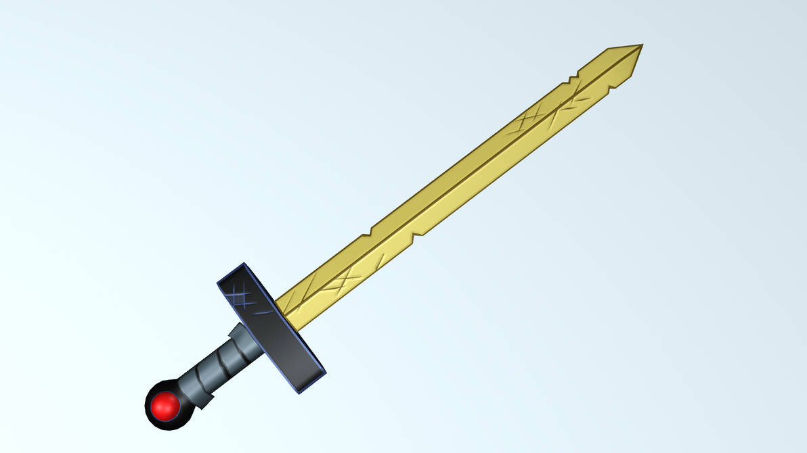
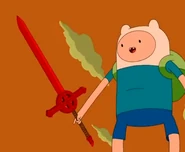
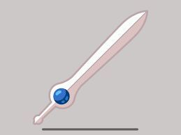

The OG
The orignal sword we see in Adventure time is just a simple worn gold sword with a red gem in the pommel. This is the sword Finn starts the show with.
The Demon Blood Sword
Finn wields the Demon Blood Sword after a pivotal moment in the series. Forged from the blood of a demon, this sword amplifies Finn's combat abilities and grants him increased power. However, it also reflects the darker aspects of his character and the moral dilemmas he faces. The Demon Blood Sword represents Finn's willingness to take risks and embrace dangerous powers to protect his friends, highlighting the complexities of his heroism.
The Grass Sword
The Grass Sword is a unique blade that Finn creates using grass from the Land of Ooo. This sword showcases his creativity and resourcefulness, emphasizing his connection to nature and the environment. The Grass Sword represents a more harmonious approach to combat, illustrating Finn’s growth as he learns to adapt and utilize his surroundings rather than relying solely on traditional weapons.

The Finn Sword
The Finn Sword is a more significant weapon Finn acquires after his wooden sword. Forged from the essence of his own being, this sword embodies Finn's growth as a hero and his connection to his identity. Its unique abilities allow him to tap into his own strengths, making it a powerful tool in battle. The Finn Sword symbolizes his journey toward self-discovery, showcasing the importance of embracing one's true self.
